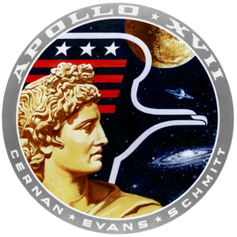

Apollo-17
Szócikk Vitalap Olvasás Szerkesztés Laptörténet EszközökA Wikipédiából, a szabad enciklopédiából
Az Apollo–17 volt az Apollo-program tizenegyedik repülése emberekkel az űrhajó fedélzetén, egyben a hatodik – és utolsó – olyan, amely leszállt a Holdon. A program átszervezése miatt – bár eredetileg még három további expedíció követte volna – ez lett az utolsó leszállás a Holdon, amely végül rekordokat hozott. 12 nap 13 óra 51 perc 59 másodperces teljes repülési ideje, 22 óra 3 perc 57 másodperces holdfelszínen töltött ideje, 35,7 kilométeres, holdjáróval megtett távolsága és 110,52 kilogrammnyi összegyűjtött holdkőzetmintája mind-mind rekordnak számít az összes Apollo-repülés között. Az Apollo–17 két nagyobb újítást is hozott az utolsó repülésre. Ezek egyike az éjszakai start, a másik, hogy a legénység egyik tagja geológus volt.
A repülést jóval megelőzően, még 1961-ben született a javaslat a tudományos közösség részéről, hogy ne csak berepülő pilótákat, hanem tudósokat is képezzen ki a NASA és juttasson fel űrhajósként az űrbe vagy a Holdra. Az űrügynökség egy teljes űrhajós-válogatási fordulót szentelt ennek a kezdeményezésnek, ahol kizárólag tudományosan képzett embereket kerestek, és végül ki is választottak egy hat főből álló csoportot, amelynek orvos, fizikus, mérnök és geológus tagjai voltak. Végül különböző tagcserékkel és felsőbb politikai nyomásra a csoport geológus tagja kapott helyet az utolsó holdra szállás legénységében. Így nevezte ki Deke Slayton, a NASA repülőszemélyzeteinek főnöke az utolsó legénységet: Gene Cernan parancsnok, Ron Evans, a parancsnoki modul pilótája és Jack Schmitt (geológus) holdkomppilóta.
| Apollo-17 |
|---|
| Apollo program |
|  |
 |
| Személyzet |
| Repülésadatok |